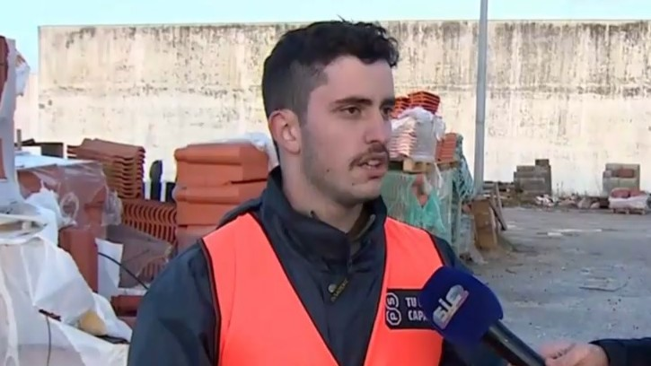

Escrevo esta nota de agradecimento a nível pessoal, a todos que ajudaram, e continuam a ajudar a Marinha Grande em tempo de reconstrução, pós tempestade Kristin. Durante estes 23 dias que estive como voluntário a ajudar, foi imensamente gratificante ver centenas de milhares de voluntários a ajudar o nosso concelho a reerguer-se. De jovens, pessoas debilitadas e de mais idade, militares - de todo o país - de norte a sul. Já para não falar das milhares de doações de anónimos, empresas, privados, e pessoas a nível pessoal de todo o continente e de Espanha e de França. Sem vós nada teria sido possível! Também um agradecimento ao presidente da câmara municipal, Paulo Vicente, e aos seus adjuntos, pelo seu profissionalismo a organizar as equipas para de seguida nos orientarem, para que tudo se tornasse possível, junto de um agradecimento aos membros da câmara municipal, sem exceções!! Começo uma nova fase a partir da próxima semana, mas termino esta de missão comprida, mas não terminada. Sem dúvidas que fiz bastantes amizades, tanto profissionais como pessoais, mas principalmente, sinto que ajudei, dentro do meu possível, o meu e nosso querido concelho da Marinha Grande. Durante as próximas semanas continuarei a dirigir-me aos estaleiros para poder ajudar, o que tanto gosto de realizar. Juntamente, informo, que a partir da próxima segunda, dia 23 de Fevereiro de 2026, o estaleiro municipal funcionará das 09h00 (nove) ao 12h30 (meio-dia e meia), e das 14 (quatorze) às 17 (dezessete), por marcação. A mesma deverá ser feita para o e-mail, materiais.kristin@cm-mgrande.pt, no qual deverá constar o modelo do material necessitado, (por exemplo, telha SOL 10, ou telhão MARCELHA), junto do nome e contacto telefónico da pessoa, o qual caso o material esteja em stock, ou o mesmo chegue aos estaleiros, será realizada uma indicação via chamada telefónica à pessoa necessitada, indicando o dia e hora de levantamento. Para as pessoas que não dispõem de correio eletrônico, as mesmas, podem dirigir-se ao estaleiro municipal, e fornecer as mesmas informações à pessoa lá presente para recolha de informação. Para mais informação, visite: https://makyneta.github.io/tempestade-kristin. Termino, esta carta, a agradecer, de coração - A TOD@S que fizeram isto possível! Obrigado de coração! Vamos reerguer a Marinha Grande, JUNTOS! 🩵
Pessoal
5 minutos de leitura
Nota De Agradecimento
Nota de agradecimento a todos/as que contribuíram para que a Marinha Grande se reerguesse cada vez mais forte.

Tomás Mota
20 de Fevereiro de 2026
